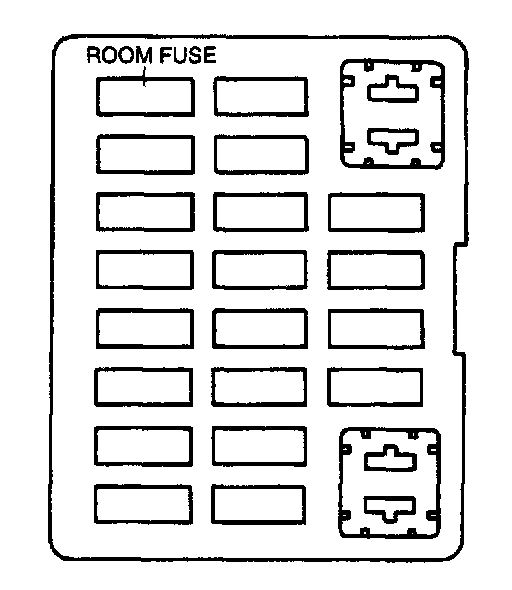

Room Fuse
ROOM FUSE INSTALLATIONNOTE: When the ROOM fuse is burnt or removed, the malfunction indicator lamp illuminates. If the ROOM fuse is replaced or installed with the ignition switch at ON, the malfunction indicator lamp will continue to illuminate.
1. Turn the ignition switch to LOCK.

2. Install the ROOM fuse.